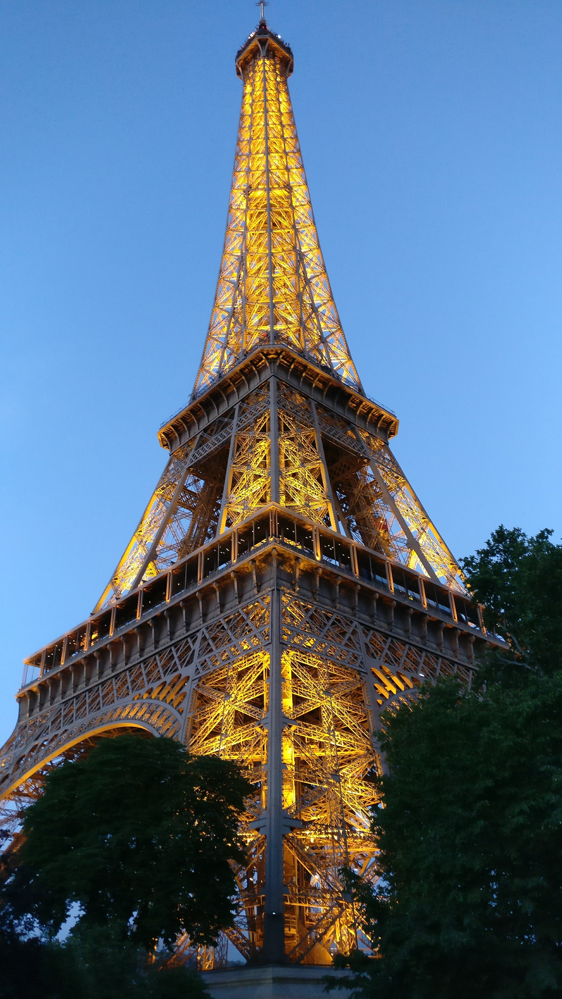

Nos services
Activité principale
- Location de salle de réunion
- Permanence téléphonique
- Reexpédition de courrier
Services +
- Création des statuts et immatriculation nouvelle entreprise (en 48h)
- Modification des statuts d'entreprise
A propos
Multi Services Mesnil
Multi Services Mesnil a été fondée en 1980, et fait ainsi partie des plus anciennes sociétés de domiciliation dans le XVIème Nord.
Etant située dans le deuxième triangle d'or de Paris (Etoile, Trocadero et Place Victor Hugo), elle vous offre une adresse prestigieuse.
Pourquoi se domicilier?
Domicilier votre entreprise chez Multi Services Mesnil consiste à la reconnaître comme siège sociale. Qu'est-ce que cela signifie? Un gain de temps précieux pour vous. Plus de temps à perdre dans la gestion de vos papiers administratifs, on s'occupe de tout! Faites-nous confiance et simplifiez-vous la vie!

Contact
 01 56 27 57 57
01 56 27 57 57 10 rue Mesnil, 75016 PARIS
10 rue Mesnil, 75016 PARISmultiservices.mesnil@gmail.com